DEMO_aorta_build_passive_01
Below is a demonstration for:
- Building geometry for a subject-specific aorta
- Creating the FEA mesh
- Coding the abaqus structure
Contents
- Keywords
- Directory
- Control parameters
- Access data structure components
- Resampling aorta section contours
- Smooth center line
- Offsetting section curves outward if thickening is inward
- Visualize offset curves
- Perform main trunk loft
- Material model
- Main trunk
- Load Iliac Branch Data
- Resample curve to have same number of points as main trunk for loft
- Perform Smoothing on Transition Region
- Pinched ellipse to two circle split
- Ensure all points for curves are clockwise for loft
- Define points for iliac extensions and Loft
- Join Iliac extensions to Bifurcation
- Load Branch data
- Perform Extrude cut
- Inverting offset direction
- Thicken to create hexahedral elements
- Retrieve segment curve indices
- Grouping ring edges and offset so they are on the inside
- Create color data for hex elements
- Material Properties
- Define Branch Ends Set
- Create ABAQUS structure
- FUNCTIONS %%%%%%%%%%%%%%%%%%%%%%%%%%%%%%%%%%%%%%%%%%%%%%%%%%%%%%%%%%%%%%
- Conver to triangles
- Resample center line
- Get mean of cut curve, project to surface
- Loft
- Constrained smoothing
Keywords
- ABAQUS
- aorta
- hexahedral elements, hex8
clear; close all; clc;
Directory
saveOn=0; %Define working directory defaultFolder = fileparts(fileparts(mfilename('fullpath'))); savePath=fullfile(defaultFolder,'data','MAT'); fileName='Concannon_aorta_segmentation.mat'; %Define save names abaqusInpFileNamePart='tempModel'; abaqusInpFileName=fullfile(savePath,[abaqusInpFileNamePart,'.inp']); %INP file name matfileSaveName=fullfile(savePath,[abaqusInpFileNamePart,'.mat']); %INP file name %Load data as structure dataStruct=load(fullfile(savePath,fileName));
Control parameters
%Define smoothing Parameters pointSpacing=1.7; % numThickenSteps=2; smoothFactorCentreLine=0.01; %Cubic smooth spline parameter [0-1] use empty to turn off smoothFactorSegments=0.01; %Cubic smooth spline parameter [0-1], 0=straight line, 1=cubic trunkSegmentReduceFactor=1; % numSmoothTrunk=100; % numSmoothPants_LAP=100; %Number of Laplacian smoothing iterations for Iliacs numSmoothPants_HC=100; %Number of HC smoothing iterations for Iliacs numSmoothBranchAttachments=100; %Number of smoothing iterations for branch origins (50) numSmoothBranches=100; %Number of smoothing iterations for rest of branches numOffsetSteps=1; %Number of steps taken to offset mesh by wall thickness numSmoothOffset=2; % methodSmoothOffset='LAP'; %Smoothing method Laplacian=agressive qualityMetricSmoothOffset=120; % distSmoothGrowth=10; % numHexSplit=1; %Split elements by factor t=1; %Time value corresponding to phase in cardiac cycle %Compressibility factor (Nolan, McGarry) kfactor=8.56; %Define thickness information dataStruct.WallThickness=[1.425 0.9 1 1.025 0.833333333 0.891666667 0.95 0.975 0.9 0.825]; thicknessIndexTransitionRegion=10; %Index of thickness at Iliac bifurcation thicknessIndexBifurcation=10; %Index of thickness distal to Iliac bifurcation thicknessIndicesBranches=[8 8 7 7 7 7 7]; %R_Renal_Ori,L_Renal_Ori,SMA_Ori,COE_Ori,LSA_Ori,LCCA_Ori,V_BCA_Ori wallThickness=dataStruct.WallThickness; %Raw data for wall thickness as a function of location numThicknessLevels=numel(wallThickness); %Define material parameter information (from segment fitting [1-10]) numMaterials=100; materialIndicesSelect=linspace(1,10,10); %Plane indices to interpolate between dataStruct.mu=0.02; %Constant dataStruct.k1=0.0001; %Constant dataStruct.k2=1; %Constant dataStruct.kappa=0; %Constant dataStruct.theta1=90; %Circumferential dataStruct.theta2=-90; %Circumferential dataStruct.sigact=0; %Constant dataStruct.ke=0.1; %Constant dataStruct.Ee=[0.82 0.74 0.63 0.5 0.45 0.4 0.35 0.28 0.27 0.27]; dataStruct.thetaE1=90; %Circumferential dataStruct.thetaE2=-90; %Circumferential dataStruct.iswitch=1; %[1=local; 2=global] %Constant dataStruct.xeps=[0.34 0.31 0.28 0.28 0.25 0.20 0.18 0.20 0.20 0.20]; dataStruct.Vcol=[0.20 0.31 0.28 0.30 0.44 0.44 0.44 0.44 0.45 0.52]; dataStruct.Vela=[0.30 0.28 0.25 0.22 0.22 0.22 0.24 0.20 0.18 0.16]; dataStruct.Vsmc=[0.20 0.20 0.20 0.23 0.24 0.25 0.26 0.26 0.27 0.27]; %Acces data mu_data=dataStruct.mu; k1_data=dataStruct.k1; k2_data=dataStruct.k2; kappa_data=dataStruct.kappa; theta1_data=dataStruct.theta1; theta2_data=dataStruct.theta2; sigact_data=dataStruct.sigact; ke_data=dataStruct.ke; Ee_data=dataStruct.Ee; thetaE1_data=dataStruct.thetaE1; thetaE2_data=dataStruct.thetaE2; xeps_data=dataStruct.xeps; Vcol_data=dataStruct.Vcol; Vela_data=dataStruct.Vela; Vsmc_data=dataStruct.Vsmc; iswitch=dataStruct.iswitch; %Define plot color (black or white background) colorMode=1; switch colorMode case 1 figStruct.ColorDef='white'; figStruct.Color='w'; case 2 figStruct.ColorDef='black'; figStruct.Color='k'; end
Access data structure components
V_cent=dataStruct.Cent; %Centroid list segmentCell=dataStruct.Points; %Lumen boundary coordinates
Resampling aorta section contours
%Resample boundary points so each plane has same number of points for lofting %Find number of points to use based on biggest circumference d=zeros(size(segmentCell,2),1); for indNow=1:1:size(segmentCell,2) Vs_1=segmentCell{t,indNow}'; d(indNow)=max(pathLength(Vs_1)); end nSegment=round(max(d)/pointSpacing); %Resample segmentCellSmooth=segmentCell; segmentCellMean=segmentCell; w=ones(size(V_cent,1),1); %Cubic smoothing spline weights indexPlanePoints_V_cent=zeros(1,size(segmentCell,2)); %Indices of centre line points at sections for indNow=1:1:size(segmentCell,2) %Resample section contour Vs_1=segmentCell{t,indNow}'; %Current contour Vs_1_smooth=evenlySampleCurve(Vs_1,nSegment,smoothFactorSegments,1); %Resample evenly Vs_1_mean=mean(Vs_1_smooth,1); segmentCellSmooth{t,indNow}=Vs_1_smooth'; segmentCellMean{t,indNow}=Vs_1_mean; %Prepare for center line smoothing by setting weight vector [~,indVertex_1]=min(sqrt(sum((V_cent-Vs_1_mean(ones(size(V_cent,1),1),:)).^2,2))); %Index closest to section w(indVertex_1)=1e9; %Heigh weight at contour sections indexPlanePoints_V_cent(indNow)=indVertex_1; %Store index of closets end
Smooth center line
%Fit smoothing spline through centreline points for loft if ~isempty(smoothFactorCentreLine) V_cent_original=V_cent; d=pathLength(V_cent); V_cent = csaps(d,V_cent_original',smoothFactorCentreLine,d,w)'; %Smoothed cFigure(figStruct); hold on; h1=plotV(V_cent_original,'g.-','LineWidth',3,'MarkerSize',35); h2=plotV(V_cent,'r-','LineWidth',2,'MarkerSize',15); h3=plotV(V_cent(w==max(w),:),'b.','MarkerSize',40); legend([h1 h2 h3],{'Original','New','At contours'}) axisGeom; drawnow; end
Offsetting section curves outward if thickening is inward
segmentCellSmooth_pre=segmentCellSmooth; for q=1:size(segmentCellSmooth,2) Vc=segmentCellSmooth{t,q}'; %Current curve vertices segmentCellSmooth{t,q}=curveOffset(Vc,wallThickness(q))'; end
Visualize offset curves
cFigure(figStruct); hold on; plotV(V_cent,'b-','LineWidth',2,'MarkerSize',15); for q=1:size(segmentCellSmooth,2) plotV(segmentCellSmooth_pre{t,q}','r.-','LineWidth',3,'MarkerSize',15); plotV(segmentCellSmooth{t,q}','g.-','LineWidth',3,'MarkerSize',15); end axisGeom; drawnow;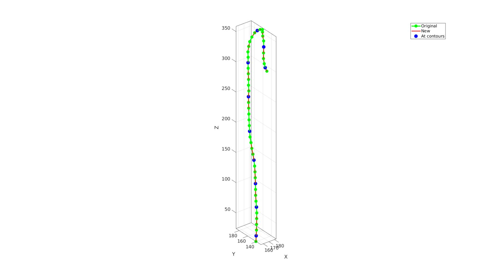 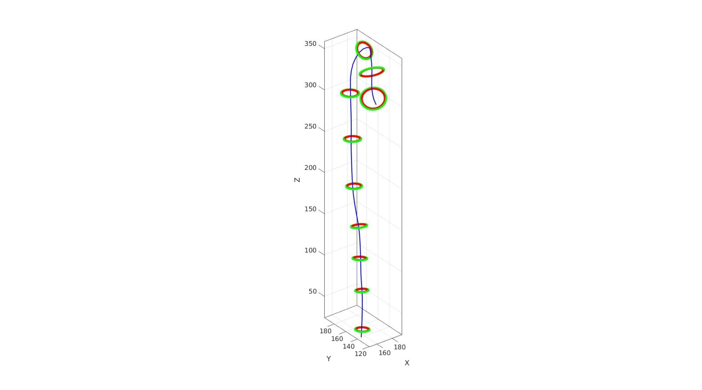
Perform main trunk loft
% Initialize figure with center line hf1=cFigure(figStruct); hold on; plotV(V_cent,'b.-','LineWidth',3,'markerSize',25); axisGeom; camlight headlight; drawnow; hp=gobjects(11,1); F_main_cell=cell(1,size(segmentCell,2)-1); %Faces cell V_main_cell=cell(1,size(segmentCell,2)-1); %Vertex cell C_main_gradient_cell=cell(1,size(segmentCell,2)-1); %Color/label dataa segmentCurve_cell=cell(1,size(segmentCell,2)); % % Eb_main_cell=cell(1,size(segmentCell,2)-1); logicBoundary=false(0,0); maxC=0; indAdd=0; %Loft from one plane to next in loop along aorta for indNow=1:1:(size(segmentCell,2)-1)
Vs_1=segmentCell{t,indNow}';
Vs_1=Vs_1(1:end-1,:);
Vs_2=segmentCell{t,indNow+1}';
Vs_2(1:end-1,:);
Vs_1_smooth=segmentCellSmooth{t,indNow}';
Vs_2_smooth=segmentCellSmooth{t,indNow+1}';
Vs_1_mean=segmentCellMean{t,indNow};
Vs_2_mean=segmentCellMean{t,indNow+1};
d=pathLength(V_cent);
%Get curve part for lofting
[~,indVertex_1]=min(sqrt(sum((V_cent-Vs_1_mean(ones(size(V_cent,1),1),:)).^2,2))); %Start
[~,indVertex_2]=min(sqrt(sum((V_cent-Vs_2_mean(ones(size(V_cent,1),1),:)).^2,2))); %End
V_cent_part=V_cent(indVertex_1:indVertex_2,:);
nPart=round(max(pathLength(V_cent_part))/pointSpacing);
[V_cent_part_smooth] = evenlySampleCurve(V_cent_part,nPart,'spline',0);
Vs_1_smooth=Vs_1_smooth-Vs_1_mean(ones(size(Vs_1_smooth,1),1),:);
Vs_1_smooth=Vs_1_smooth+V_cent_part_smooth(ones(size(Vs_1_smooth,1),1),:);
Vs_2_smooth=Vs_2_smooth-Vs_2_mean(ones(size(Vs_2_smooth,1),1),:);
Vs_2_smooth=Vs_2_smooth+V_cent_part_smooth(size(V_cent_part_smooth,1)*ones(size(Vs_2_smooth,1),1),:);
v1=vecnormalize(V_cent_part_smooth(2,:)-V_cent_part_smooth(1,:));
[Q]=pointSetPrincipalDir(Vs_1_smooth-Vs_1_mean(ones(size(Vs_1_smooth,1),1),:));
n1=Q(:,3)';
if dot(v1,n1)<0
n1=-n1;
end
v2=vecnormalize(V_cent_part_smooth(end,:)-V_cent_part_smooth(end-1,:));
[Q]=pointSetPrincipalDir(Vs_2_smooth-Vs_2_mean(ones(size(Vs_2_smooth,1),1),:));
n2=Q(:,3)';
if dot(v2,n2)<0
n2=-n2;
end
plotOn=0;
nLoft=round(nPart/trunkSegmentReduceFactor);
[Fs,Vs,Cs]=sweepLoft(Vs_1_smooth,Vs_2_smooth,n1,n2,V_cent_part_smooth,nLoft,0,plotOn);
indLoftBottom=1:nLoft:size(Vs,1);
indLoftTop=(nLoft:nLoft:size(Vs,1));
segmentCurve_cell{indNow}=indLoftBottom+indAdd;
if indNow==(size(segmentCell,2)-1)
segmentCurve_cell{indNow+1}=indLoftTop+indAdd;
end
indAdd=indAdd+size(Vs,1);
Eb=patchBoundary(Fs,Vs);
logicBoundaryNow=false(size(Vs,1),1);
logicBoundaryNow(unique(Eb(:)))=1;
F_main_cell{indNow}=Fs;
V_main_cell{indNow}=Vs;
%Store color gradient information
C_main_gradient_cell{indNow}=Cs+maxC;
maxC=maxC+max(Cs);
logicBoundary=[logicBoundary; logicBoundaryNow];
Warning: Second input (vertices) no longer required. Update code to avoid future error.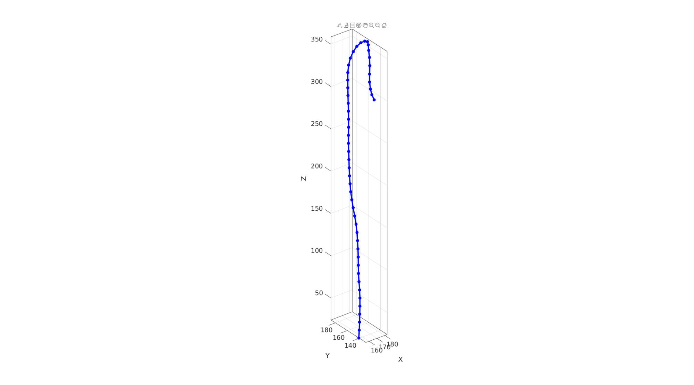
Warning: Second input (vertices) no longer required. Update code to avoid future error.
Warning: Second input (vertices) no longer required. Update code to avoid future error.
Warning: Second input (vertices) no longer required. Update code to avoid future error.
Warning: Second input (vertices) no longer required. Update code to avoid future error.
Warning: Second input (vertices) no longer required. Update code to avoid future error.
Warning: Second input (vertices) no longer required. Update code to avoid future error.
Warning: Second input (vertices) no longer required. Update code to avoid future error.
Warning: Second input (vertices) no longer required. Update code to avoid future error.
Plot Loft of main trunk
figure(hf1);
gpatch(Fs,Vs,'kw','kw',0.85);
plotV(V_cent_part_smooth,'m.-','LineWidth',2,'markerSize',15);
plotV(Vs_1_smooth,'r-','LineWidth',2);
plotV(V_cent(indVertex_1,:),'r+','markerSize',25);
plotV(Vs_2_smooth,'r-','LineWidth',2);
axis off;
xlim([140 200]); ylim([120 200]); zlim([20 370]);
drawnow;
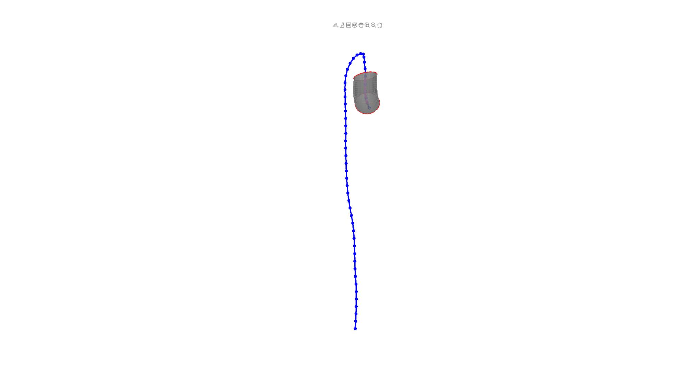 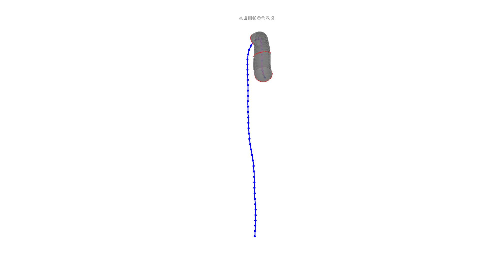 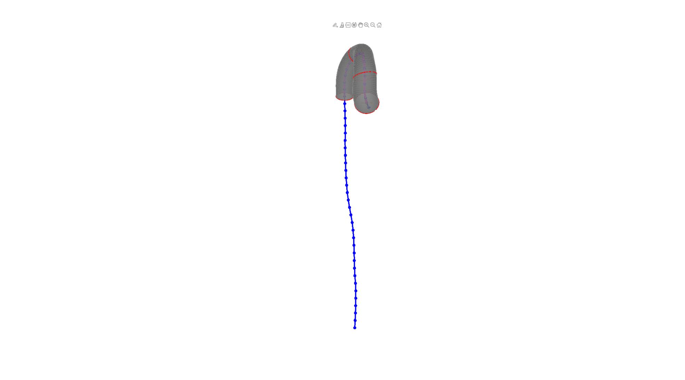 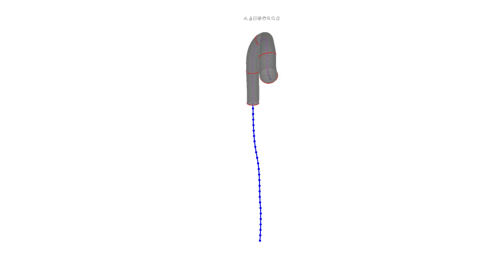 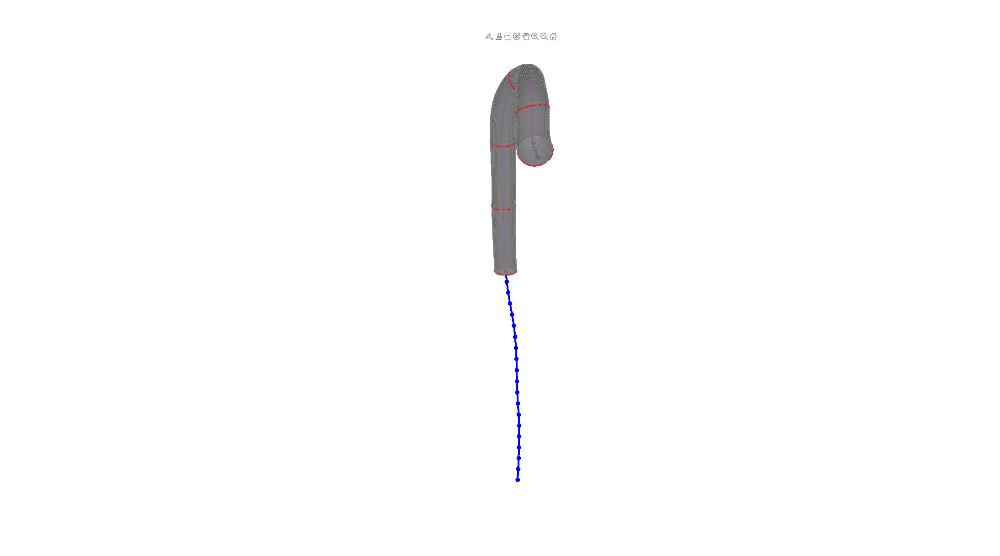 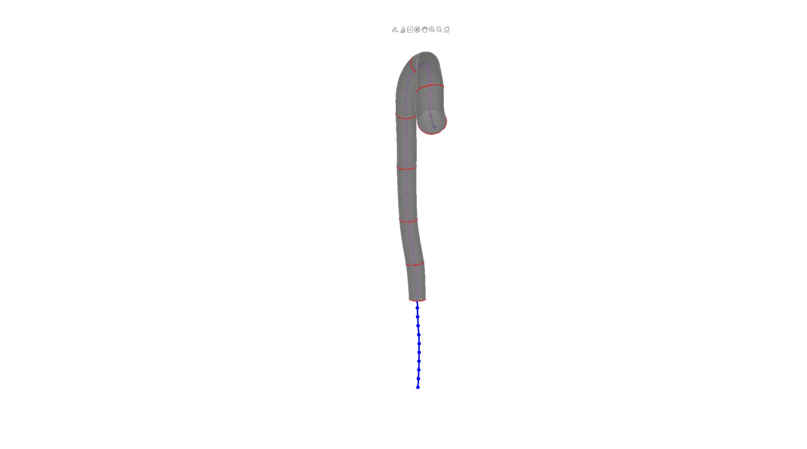 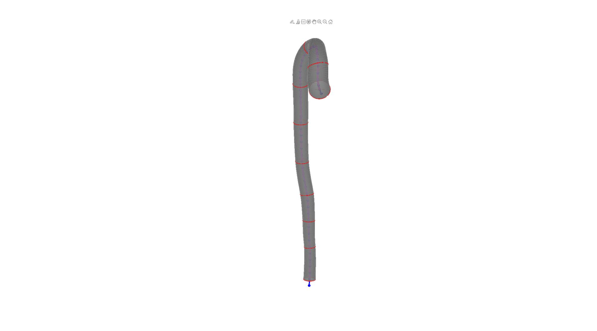 end
Material model
%linearly interpolate parameters between planes % Get center line distance metric for each plane V_cent_crop=V_cent(indexPlanePoints_V_cent(1):indexPlanePoints_V_cent(end),:); indexPlanePoints_V_cent_crop=(indexPlanePoints_V_cent-indexPlanePoints_V_cent(1))+1; d=pathLength(V_cent_crop); d=d./max(d(:)); %Normalised curve length curveLengthPlanePoints=d(indexPlanePoints_V_cent_crop); %mu_data=interp1(curveLengthPlanePoints(materialIndicesSelect),mu_data(materialIndicesSelect),curveLengthPlanePoints,'linear'); Ee_data=interp1(curveLengthPlanePoints(materialIndicesSelect),Ee_data(materialIndicesSelect),curveLengthPlanePoints,'linear'); xeps_data=interp1(curveLengthPlanePoints(materialIndicesSelect),xeps_data(materialIndicesSelect),curveLengthPlanePoints,'linear'); Vcol_data=interp1(curveLengthPlanePoints(materialIndicesSelect),Vcol_data(materialIndicesSelect),curveLengthPlanePoints,'linear'); Vela_data=interp1(curveLengthPlanePoints(materialIndicesSelect),Vela_data(materialIndicesSelect),curveLengthPlanePoints,'linear');
Main trunk
Join element sets to form main trunk and form colour information
C_main=[]; for q=1:1:numel(F_main_cell) C_main=[C_main; q*ones(size(F_main_cell{q},1),1)]; end [F_main,V_main,C_path]=joinElementSets(F_main_cell,V_main_cell,C_main_gradient_cell); %Scale color gradient for wall thickness interpolation C_path = rescale(C_path,1,numThicknessLevels); F_main=fliplr(F_main); %Invert orientation [F_main,V_main,ind1,indFix]=mergeVertices(F_main,V_main); for q=1:1:numel(segmentCurve_cell) segmentCurve_cell{q}=indFix(segmentCurve_cell{q}); end logicBoundary=logicBoundary(ind1); % Perform Smoothing on main trunk controlParameter.n=numSmoothTrunk; controlParameter.Method='HC'; controlParameter.RigidConstraints=find(logicBoundary); %Ensure smoothing cannot change coordinates of planes of interest [V_main]=patchSmooth(F_main,V_main,[],controlParameter); % Plot cFigure(figStruct); subplot(1,2,1); hold on; title('Segments') plotV(V_cent,'k.-','LineWidth',3,'markerSize',25); gpatch(F_main,V_main,C_main,'k'); patchNormPlot(F_main,V_main,1,'v'); %Check normals of elements all facing outward for q=1:1:numel(segmentCurve_cell) plotV(V_main(segmentCurve_cell{q},:),'b.-','LineWidth',5,'markerSize',35); end plotV(V_main(logicBoundary,:),'r.','markerSize',25); axisGeom; colormap(gca,gjet(250)); icolorbar; camlight headlight; lighting gouraud; subplot(1,2,2); hold on; title('Continuous') plotV(V_cent,'k.-','LineWidth',3,'markerSize',25); gpatch(F_main,V_main,C_path,'k'); plotV(V_main(logicBoundary,:),'r.','markerSize',25); % patchNormPlot(F_main,V_main,1,'v'); axisGeom; colormap(gca,gjet(250)); colorbar; camlight headlight; lighting gouraud; drawnow;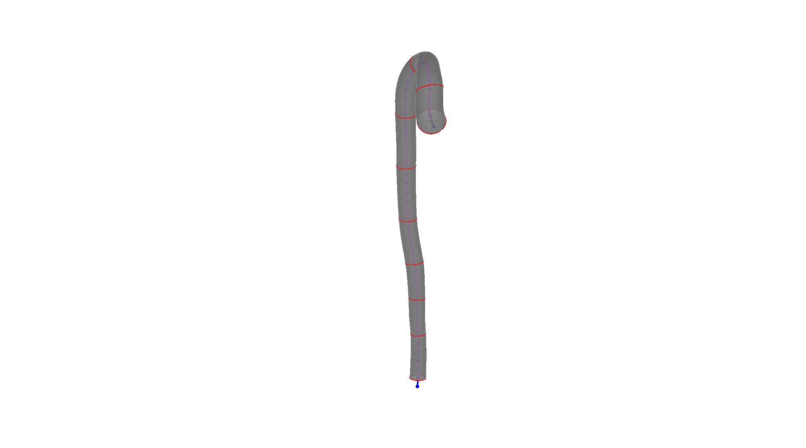 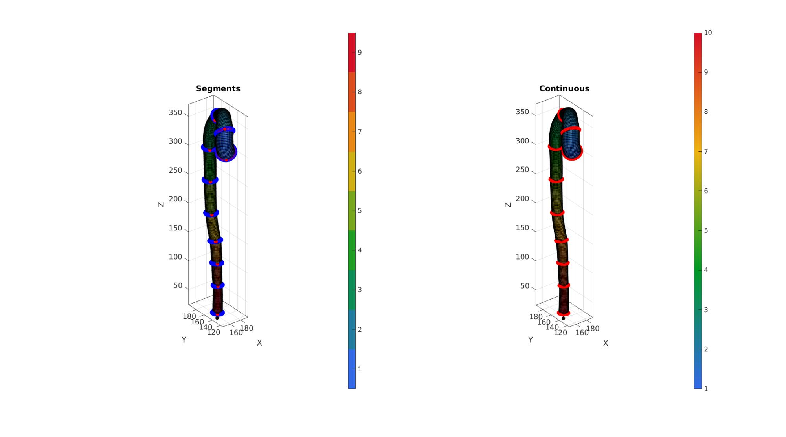
E_rings=[F_main(:,[1 2]); fliplr(F_main(:,[3 4]))]; E_rings=uniqueIntegerRow(E_rings);
Load Iliac Branch Data
%Right Origin V_R_ori=dataStruct.R_Ori(1:end-1,:); V_R_ori=resampleCurve(V_R_ori,pointSpacing,1); V_R_ori(:,1)=V_R_ori(:,1); V_R_ori=curveOffset(V_R_ori,wallThickness(end)); %Left Origin V_L_ori=dataStruct.L_Ori(1:end-1,:); V_L_ori=resampleCurve(V_L_ori,pointSpacing,1); V_L_ori(:,1)=V_L_ori(:,1)-1; V_L_ori=curveOffset(V_L_ori,wallThickness(end)); %Left End V_L_Iliac=dataStruct.L_Iliac(1:end-1,:); V_L_Iliac=resampleCurve(V_L_Iliac,pointSpacing,1); V_L_Iliac=curveOffset(V_L_Iliac,wallThickness(end)); %Right End V_R_Iliac=dataStruct.R_Iliac(1:end-1,:); V_R_Iliac=resampleCurve(V_R_Iliac,pointSpacing,1); V_R_Iliac=curveOffset(V_R_Iliac,wallThickness(end)); %Bifurcation Data V_bifurc=dataStruct.bifurc; V_bifurc=curveOffset(V_bifurc,wallThickness(end));
Resample curve to have same number of points as main trunk for loft
Eb_all=patchBoundary(F_main,V_main); Eb_lowerSegment=patchBoundary(F_main(C_main==max(C_main),:),V_main); Eb_lower=Eb_lowerSegment(all(ismember(Eb_lowerSegment,Eb_all),2),:); indLowerCurve=edgeListToCurve(Eb_lower); indLowerCurve=indLowerCurve(1:end-1); indLowerCurve=indLowerCurve(:); V_main_lowerCurve=V_main(indLowerCurve,:); if isPolyClockwise(V_bifurc)~=isPolyClockwise(V_main_lowerCurve) V_bifurc=flipud(V_bifurc); end V_bifurc=evenlySampleCurve(V_bifurc,size(V_main_lowerCurve,1),'spline',1); %resample [~,indMin]=minDist(V_main_lowerCurve(1,:),V_bifurc); if indMin>1 V_bifurc=[V_bifurc(indMin:end,:); V_bifurc(1:indMin-1,:)]; end % Mesh transition region cPar.closeLoopOpt=1; cPar.patchType='quad'; [F_add,V_add,indStart,indEndBifurc]=polyLoftLinear(V_main_lowerCurve,V_bifurc,cPar); F_add=fliplr(F_add); C_add=ones(size(F_add,1),1); F_main=[F_main; F_add+size(V_main,1)]; indEndBifurc=indEndBifurc+size(V_main,1); V_main=[V_main; V_add]; C_main=[C_main; C_add+max(C_main)]; C_path=[C_path; thicknessIndexTransitionRegion.*ones(size(C_add))]; [F_main,V_main,~,indFix]=mergeVertices(F_main,V_main); indLowerCurve=indFix(indLowerCurve); indEndBifurc=indFix(indEndBifurc); E_rings=indFix(E_rings); for q=1:1:numel(segmentCurve_cell) segmentCurve_cell{q}=indFix(segmentCurve_cell{q}); end
Warning: Second input (vertices) no longer required. Update code to avoid future error. Warning: Second input (vertices) no longer required. Update code to avoid future error.
Perform Smoothing on Transition Region
indTouch=indLowerCurve(:); numSmoothGrowSteps=3; for q=1:1:numSmoothGrowSteps logicFacesTouch=any(ismember(F_main,indTouch),2); indTouch=F_main(logicFacesTouch,:); end smoothControlParameters.n=numSmoothPants_HC; smoothControlParameters.Method='HC'; smoothControlParameters.RigidConstraints=[unique(F_main(~logicFacesTouch,:)); indLowerCurve]; [V_main]=patchSmooth(F_main,V_main,[],smoothControlParameters);
Plot Main and Transition Region
cFigure(figStruct); hold on; gpatch(F_main,V_main,logicFacesTouch,'none'); patchNormPlot(F_main,V_main); plotV(V_main(indLowerCurve,:),'r.-','markerSize',25); plotV(V_main(indEndBifurc,:),'g.-','markerSize',25); for q=1:1:numel(segmentCurve_cell) plotV(V_main(segmentCurve_cell{q},:),'b.-','LineWidth',5,'markerSize',35); end axisGeom; colormap gjet; camlight headlight; lighting flat; drawnow;
Pinched ellipse to two circle split
ns=ceil(abs(mean(V_main(indEndBifurc,3))-mean(V_R_ori(:,3)))/pointSpacing)+1;
V_cell={V_main(indEndBifurc,:),V_R_ori,V_L_ori};
patchType='quad';
splitMethod='nearMid';
controlParSmooth.Method='LAP';
controlParSmooth.n=numSmoothPants_LAP;
[F_split,V_split,curveIndices,C_split]=splitCurveSetMesh(V_cell,ns,patchType,controlParSmooth,splitMethod,1);
Plot
cFigure(figStruct); hold on; % gpatch(F_main,V_main,'kw','k'); gpatch(F_split,V_split,C_split,'k'); patchNormPlot(F_split,V_split); plotV(V_main(indEndBifurc,:),'r.-','markerSize',25); % plotV(V_split(curveIndices{1},:),'g.-','markerSize',25); axisGeom; colormap gjet; camlight headlight; drawnow;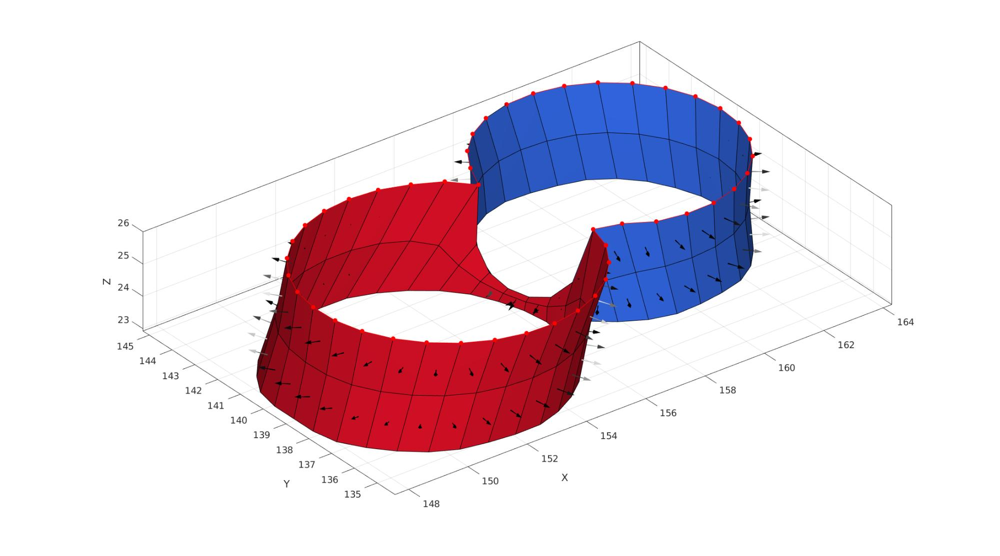
Ensure all points for curves are clockwise for loft
indEndBifurc_split=curveIndices{1}; indEndBifurc_split=indEndBifurc_split(:);
indBranch11=curveIndices{2}; indBranch11=indBranch11(:);
indBranch21=curveIndices{3}; indBranch21=indBranch21(:);
V_branch12=evenlySampleCurve(V_L_Iliac,numel(indBranch11),'spline',1);
V_branch22=evenlySampleCurve(V_R_Iliac,numel(indBranch21),'spline',1);
V_branch11=V_split(indBranch11,:);
if ~isPolyClockwise(V_branch11)
indBranch11=flipud(indBranch11);
V_branch11=V_split(indBranch11,:);
end
V_branch21=V_split(indBranch21,:);
if ~isPolyClockwise(V_branch21)
indBranch21=flipud(indBranch21);
V_branch21=V_split(indBranch21,:);
end
if ~isPolyClockwise(V_branch22)
V_branch22=flipud(V_branch22);
end
if ~isPolyClockwise(V_branch12)
V_branch12=flipud(V_branch12);
end
[~,indMin]=min(V_branch12(:,1));
if indMin>1
V_branch12=[V_branch12(indMin:end,:); V_branch12(1:indMin-1,:)];
end
[~,indMin]=min(V_branch22(:,1));
if indMin>1
V_branch22=[V_branch22(indMin:end,:); V_branch22(1:indMin-1,:)];
end
Define points for iliac extensions and Loft
V_loft_cell1{1}=V_branch11;
V_loft_cell2{1}=V_branch12;
V_loft_cell1{2}=V_branch21;
V_loft_cell2{2}=V_branch22;
V_loft_cent_cell{1}=dataStruct.Cent_I_R;
V_loft_cent_cell{2}=dataStruct.Cent_I_L;
F_iliac_cell=cell(1,2);
V_iliac_cell=cell(1,2);
for q=1:1:2
V1=V_loft_cell1{q};
V2=V_loft_cell2{q};
Vc=V_loft_cent_cell{q};
[~,indMin]=minDist(mean(V1,1),Vc);
if indMin>1
Vc=Vc(indMin:end,:);
end
Vc(1,:)=mean(V1,1); %Overide first point with mean of segment
np=ceil(max(pathLength(Vc))/pointSpacing)+1;
Vc = evenlySampleCurve(Vc,np,'spline',0);
plot loft paths and profile
cFigure(figStruct); hold on; plotV(V1,'b.-','markerSize',25); plotV(V2,'r.-','markerSize',25); plotV(Vc,'g.-','markerSize',25); axisGeom; colormap gjet; camlight headlight; lighting gouraud; drawnow;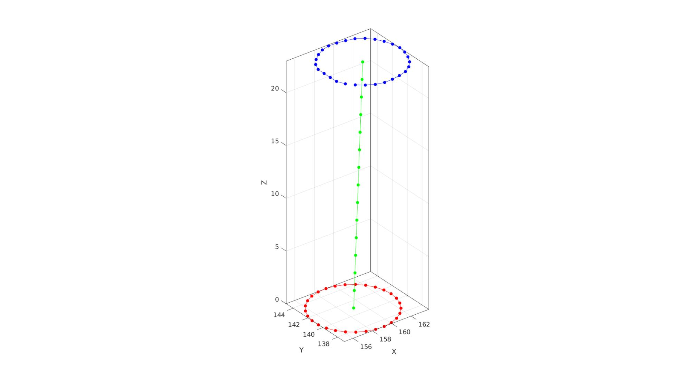 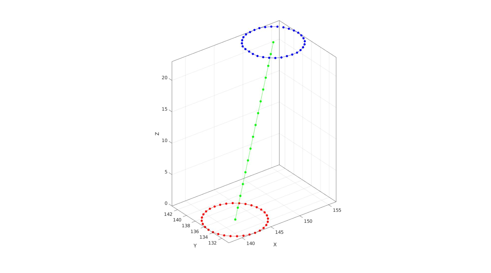
V2 = evenlySampleCurve(V2,size(V1,1),'spline',1); v1=vecnormalize(Vc(2,:)-Vc(1,:)); [Q]=pointSetPrincipalDir(V1-Vc(ones(size(V1,1),1),:)); n1=Q(:,3)'; if dot(v1,n1)<0 n1=-n1; end v2=vecnormalize(Vc(end,:)-Vc(end-1,:)); [Q]=pointSetPrincipalDir(V2-Vc(size(Vc,1)*ones(size(V2,1),1),:)); n2=Q(:,3)'; if dot(v2,n2)<0 n2=-n2; end pointSpacingNow=mean(diff(pathLength(V1))); np=ceil(max(pathLength(Vc))/pointSpacingNow); Vc = evenlySampleCurve(Vc,np,'spline',0); [F_loft,V_loft,C_loft]=sweepLoft(V1,V2,n1,n2,Vc,size(Vc,1),0,0); F_iliac_cell{q}=F_loft; V_iliac_cell{q}=V_loft;
end
F_branch1=F_iliac_cell{1};
V_branch1=V_iliac_cell{1};
F_branch2=F_iliac_cell{2};
V_branch2=V_iliac_cell{2};
Plot Iliac extension Loft
cFigure(figStruct); hold on; % gpatch(F_main,V_main,C_main,'k'); % gpatch(F_main(C_main==max(C_main),:),V_main,'kw','none'); gpatch(F_split,V_split,C_split,'k'); gpatch(F_branch1,V_branch1,'gw'); patchNormPlot(F_branch1,V_branch1); gpatch(F_branch2,V_branch2,'bw'); patchNormPlot(F_branch2,V_branch2); plotV(V_main(indEndBifurc,:),'r.-','markerSize',25); plotV(V_branch11,'g.-','markerSize',25); plotV(V_branch12,'g.-','markerSize',25); plotV(V_branch21,'b.-','markerSize',25); plotV(V_branch22,'b.-','markerSize',25); axisGeom; colormap gjet; camlight headlight; lighting gouraud; drawnow;
Join Iliac extensions to Bifurcation
[Fp,Vp,Cp]=joinElementSets({F_split,F_branch1,F_branch2},{V_split,V_branch1,V_branch2});
[Fp,Vp,~,indFix]=mergeVertices(Fp,Vp);
Eb_p=patchBoundary(Fp,Vp);
indEndBifurc_split=indFix(indEndBifurc_split);
indBranch11=indFix(indBranch11);
indBranch21=indFix(indBranch21);
%%Smooth Iliacs
indTouch=[indBranch11(:); indBranch21(:)];
numSmoothGrowSteps=3;
for q=1:1:numSmoothGrowSteps
logicFacesTouch=any(ismember(Fp,indTouch),2);
indTouch=Fp(logicFacesTouch,:);
end
smoothControlParameters.n=numSmoothPants_HC;
smoothControlParameters.Method='HC';
smoothControlParameters.RigidConstraints=[unique(Fp(~logicFacesTouch,:)); indEndBifurc_split];
[Vp]=patchSmooth(Fp,Vp,[],smoothControlParameters);
Warning: Second input (vertices) no longer required. Update code to avoid future error.
Plot Iliacs
cFigure(figStruct); hold on; gpatch(Fp,Vp,logicFacesTouch,'k'); patchNormPlot(Fp,Vp); plotV(Vp(indBranch11,:),'r-','LineWidth',3) plotV(Vp(indBranch21,:),'r-','LineWidth',3) axisGeom; colormap gjet; camlight headlight; lighting gouraud; drawnow;
Add to main trunk
F_main=[F_main; Fp+size(V_main,1)]; indBranch11=indBranch11+size(V_main,1); indBranch21=indBranch21+size(V_main,1); V_main=[V_main; Vp]; C_main=[C_main; Cp+max(C_main)]; C_path=[C_path; thicknessIndexBifurcation.*ones(size(Cp))]; C_path_mat=C_path; %Copy over path color data for material assignments [F_main,V_main,~,indFix]=mergeVertices(F_main,V_main); indLowerCurve=indFix(indLowerCurve); indBranch11=indFix(indBranch11); indBranch21=indFix(indBranch21); E_rings=indFix(E_rings); for q=1:1:numel(segmentCurve_cell) segmentCurve_cell{q}=indFix(segmentCurve_cell{q}); end % indTouch=[indLowerCurve(:); indBranch11(:); indBranch21(:)]; nGrowthSteps=round(distSmoothGrowth/pointSpacing); for q=1:1:numSmoothGrowSteps logicFacesTouch=any(ismember(F_main,indTouch),2); indTouch=F_main(logicFacesTouch,:); end ind1=F_main(~logicFacesTouch,:); indRigid=unique([ind1(:); indBranch11(:); indBranch21(:)]); smoothControlParameters.Tolerance=0.01; smoothControlParameters.n=numSmoothPants_HC; smoothControlParameters.Method='HC'; smoothControlParameters.RigidConstraints=indRigid; [V_main]=patchSmooth(F_main,V_main,[],smoothControlParameters); % cFigure(figStruct); hold on; gpatch(F_main,V_main,logicFacesTouch,'k'); % patchNormPlot(F_main,V_main); plotV(V_main(indLowerCurve,:),'r.-','markerSize',25); plotV(V_main(indBranch11,:),'r.-','markerSize',25); plotV(V_main(indBranch21,:),'r.-','markerSize',25); for q=1:1:numel(segmentCurve_cell) plotV(V_main(segmentCurve_cell{q},:),'b.-','LineWidth',5,'markerSize',35); end axisGeom; colormap gjet; camlight headlight; lighting gouraud; drawnow;
Load Branch data
%Other branches V_L_Renal_Ori=dataStruct.L_Renal_Ori(1:end-1,:); V_L_Renal_Ori=resampleCurve(V_L_Renal_Ori,pointSpacing,1); V_L_Renal_Ori=curveOffset(V_L_Renal_Ori,wallThickness(7)); V_L_Renal=dataStruct.L_Renal(1:end-1,:); V_L_Renal=resampleCurve(V_L_Renal,pointSpacing,1); V_L_Renal=curveOffset(V_L_Renal,wallThickness(7)); V_Cent_L_Renal=dataStruct.Cent_Renal_L; V_Cent_L_Renal=resampleCurve(V_Cent_L_Renal,pointSpacing,0); V_R_Renal_Ori=dataStruct.R_Renal_Ori(1:end-1,:); V_R_Renal_Ori=resampleCurve(V_R_Renal_Ori,pointSpacing,1); V_R_Renal_Ori=curveOffset(V_R_Renal_Ori,wallThickness(7)); V_R_Renal=dataStruct.R_Renal(1:end-1,:); V_R_Renal=resampleCurve(V_R_Renal,pointSpacing,1); V_R_Renal=curveOffset(V_R_Renal,wallThickness(7)); V_Cent_R_Renal=dataStruct.Cent_Renal_R; V_Cent_R_Renal=resampleCurve(V_Cent_R_Renal,pointSpacing,0); V_SMA_Ori=dataStruct.SMA_O(1:end-1,:); V_SMA_Ori=resampleCurve(V_SMA_Ori,pointSpacing,1); V_SMA_Ori=curveOffset(V_SMA_Ori,wallThickness(7)); V_SMA=dataStruct.SMA(1:end-1,:); V_SMA=resampleCurve(V_SMA,pointSpacing,1); V_SMA=curveOffset(V_SMA,wallThickness(7)); V_Cent_SMA=dataStruct.Cent_SMA; V_Cent_SMA=resampleCurve(V_Cent_SMA,pointSpacing,0); V_COE_Ori=dataStruct.COE_O(1:end-1,:); V_COE_Ori=resampleCurve(V_COE_Ori,pointSpacing,1); V_COE_Ori=curveOffset(V_COE_Ori,wallThickness(7)); V_COE=dataStruct.COE(1:end-1,:); V_COE=resampleCurve(V_COE,pointSpacing,1); V_COE=curveOffset(V_COE,wallThickness(7)); V_Cent_COE=dataStruct.Cent_Coeliac; V_Cent_COE=resampleCurve(V_Cent_COE,pointSpacing,0); V_BCA_Ori=dataStruct.BCA_O(1:end-1,:); V_BCA_Ori=resampleCurve(V_BCA_Ori,pointSpacing,1); V_BCA_Ori=curveOffset(V_BCA_Ori,wallThickness(2)); V_BCA=dataStruct.BCA(1:end-1,:); V_BCA=resampleCurve(V_BCA,pointSpacing,1); V_BCA=curveOffset(V_BCA,wallThickness(2)); V_Cent_BCA=dataStruct.Cent_BCA; V_Cent_BCA=resampleCurve(V_Cent_BCA,pointSpacing,0); V_LCCA_Ori=dataStruct.LCCA_O(1:end-1,:); V_LCCA_Ori=resampleCurve(V_LCCA_Ori,pointSpacing,1); V_LCCA_Ori=curveOffset(V_LCCA_Ori,wallThickness(2)); V_LCCA=dataStruct.LCCA(1:end-1,:); V_LCCA=resampleCurve(V_LCCA,pointSpacing,1); V_LCCA=curveOffset(V_LCCA,wallThickness(2)); V_Cent_LCCA=dataStruct.Cent_LCCA; V_Cent_LCCA=resampleCurve(V_Cent_LCCA,pointSpacing,0); V_LSA_Ori=dataStruct.LSA_O(1:end-1,:); V_LSA_Ori=resampleCurve(V_LSA_Ori,pointSpacing,1); V_LSA_Ori=curveOffset(V_LSA_Ori,wallThickness(2)); V_LSA=dataStruct.LSA(1:end-1,:); V_LSA=resampleCurve(V_LSA,pointSpacing,1); V_LSA=curveOffset(V_LSA,wallThickness(2)); V_Cent_LSA=dataStruct.Cent_LSA; V_Cent_LSA=resampleCurve(V_Cent_LSA,pointSpacing,0); % Plot cFigure(figStruct); hold on; gpatch(F_main,V_main,C_main,0.65); plotV(V_R_Renal_Ori,'r.-','markerSize',5); plotV(V_R_Renal,'w.-','markerSize',5); plotV(V_L_Renal_Ori,'g.-','markerSize',5); plotV(V_L_Renal,'w.-','markerSize',5); plotV(V_COE_Ori,'w.-','markerSize',5); plotV(V_COE,'w.-','markerSize',5); plotV(V_SMA_Ori,'w.-','markerSize',5); plotV(V_SMA,'w.-','markerSize',5); plotV(V_BCA_Ori,'w.-','markerSize',5); plotV(V_BCA,'w.-','markerSize',5); plotV(V_LCCA_Ori,'w.-','markerSize',5); plotV(V_LCCA,'w.-','markerSize',5); plotV(V_LSA_Ori,'w.-','markerSize',5); plotV(V_LSA,'w.-','markerSize',5); xlim([140 200]); ylim([120 200]); zlim([20 370]); axisGeom; colormap jet; camlight headlight; lighting gouraud; drawnow;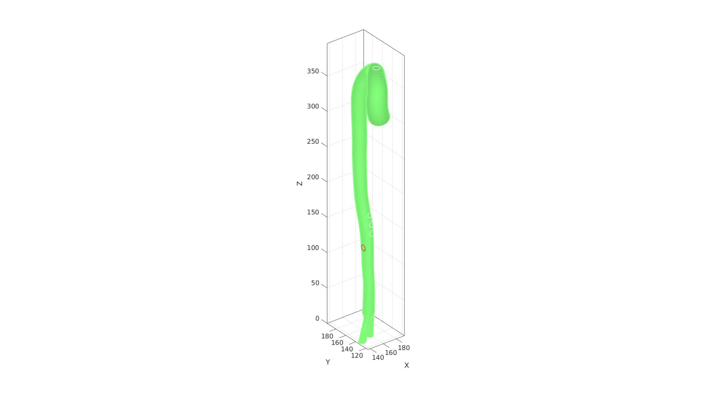
Perform Extrude cut
Find Centroid of Ori and shoot vector in direction of nearest Centreline point. Apply same vector to each point on Ori and every element on the main trunk wall it touches is deleted. Loft then from deleted elements of main to each branch ori
V_cut=V_R_Renal_Ori;
V_cut_cell={V_R_Renal_Ori,V_L_Renal_Ori,V_SMA_Ori,V_COE_Ori,...
V_LSA_Ori,V_LCCA_Ori,V_BCA_Ori};
%Loop over connections
smoothControlParameters.n=numSmoothBranchAttachments;
smoothControlParameters.Method='HC';
hw = waitbar(0,'Please wait...');
numSteps=numel(V_cut_cell);
V_endCurve_cell=cell(1,numSteps);
C_main_max=max(C_main)+1;
for q=1:1:numSteps
waitbar(q/numSteps,hw,['Processing case ',num2str(q),' of ',num2str(numSteps)]);
VF=patchCentre(F_main,V_main); %Face centre coordinates
[~,indMin]=minDist(mean(V_cut_cell{q},1),VF);
c=C_path(indMin);
[F_main,V_main,C_main,indEnd,logicRemoveFaces,segmentCurve_cell,E_rings]=circleCutExtrude(F_main,V_main,C_main,V_cent,V_cut_cell{q},pointSpacing,0,smoothControlParameters,segmentCurve_cell,E_rings);
numFacesNewFeature=nnz(C_main==max(C_main));
C_path=[C_path(~logicRemoveFaces); thicknessIndicesBranches(q)*ones(numFacesNewFeature,1)];
C_path_mat=[C_path_mat(~logicRemoveFaces); c*ones(numFacesNewFeature,1)];
V_endCurve_cell{q}=V_main(indEnd,:);
end
close(hw);
% plot
cFigure(figStruct); hold on;
gpatch(F_main,V_main,C_path,'k',1);
for q=1:1:numel(V_endCurve_cell)
plotV(V_endCurve_cell{q},'m.-','markerSize',25);
end
axisGeom;
colormap gjet; colorbar;
camlight headlight;
drawnow;
% plot
cFigure(figStruct); hold on;
gpatch(F_main,V_main,C_path_mat,'k',1);
axisGeom;
colormap gjet; colorbar;
camlight headlight;
drawnow;
% Resample branch ends and sweep
V_loft_cell1=V_endCurve_cell;
V_loft_cell2={V_R_Renal,V_L_Renal,V_SMA,V_COE,...
V_LSA,V_LCCA,V_BCA};
V_loft_cent_cell={V_Cent_R_Renal,V_Cent_L_Renal,V_Cent_SMA,V_Cent_COE,V_Cent_LSA,V_Cent_LCCA,V_Cent_BCA};
F_branch_cell=cell(1,numel(V_endCurve_cell));
V_branch_cell=cell(1,numel(V_endCurve_cell));
indBranchTop_cell=cell(1,numel(V_endCurve_cell));
indBranchBottom_cell=cell(1,numel(V_endCurve_cell));
for q=1:1:numel(V_endCurve_cell)
V1=V_loft_cell1{q};
pointSpacingNow=mean(diff(pathLength(V1)));
V2=V_loft_cell2{q};
Vc=V_loft_cent_cell{q};
np=ceil(max(pathLength(Vc))/pointSpacingNow);
Vc = evenlySampleCurve(Vc,np,'spline',0);
V2 = evenlySampleCurve(V2,size(V1,1),'spline',1);
v1=vecnormalize(Vc(2,:)-Vc(1,:));
[Q]=pointSetPrincipalDir(V1-Vc(ones(size(V1,1),1),:));
n1=Q(:,3)';
if dot(v1,n1)<0
n1=-n1;
end
v2=vecnormalize(Vc(end,:)-Vc(end-1,:));
[Q]=pointSetPrincipalDir(V2-Vc(size(Vc,1)*ones(size(V2,1),1),:));
n2=Q(:,3)';
if dot(v2,n2)<0
n2=-n2;
end
b2=vecnormalize(V2(2,:)-V2(1,:));
a2=vecnormalize(V2(1,:)-mean(V2,1));
c2=cross(b2,a2);
if dot(n2,c2)<0
V2=flipud(V2);
end
[F_loft,V_loft,C_loft]=sweepLoft(V1,V2,n1,n2,Vc,size(Vc,1),0,0);
F_loft=fliplr(F_loft);
indLoftBottom=1:size(Vc,1):size(V_loft,1);
indLoftTop=(size(Vc,1):size(Vc,1):size(V_loft,1));
F_branch_cell{q}=F_loft;
V_branch_cell{q}=V_loft;
if q>1
sizAll=cellfun(@(x) size(x,1),V_branch_cell);
indBranchTop_cell{q}=indLoftTop+sum(sizAll(1:q-1));
indBranchBottom_cell{q}=indLoftBottom+sum(sizAll(1:q-1));
else
indBranchTop_cell{q}=indLoftTop;
indBranchBottom_cell{q}=indLoftBottom;
end
% The below plot highlights each loft path in a loop
% cFigure(figStruct); hold on;
% title(num2str(q))
% gpatch(F_main,V_main,'kw','none',0.5);
% gpatch(F_loft,V_loft,'rw','r',1);
% plotV(V_loft(indLoftBottom,:),'b.-','LineWidth',3);
% plotV(V_loft(indLoftTop,:),'g.-','LineWidth',3);
% % plotV(V1,'r.-','LineWidth',3);
% % plotV(V2,'b.-','LineWidth',3);
% % plotV(Vc,'k.-','LineWidth',3);
% % quiverVec(Vc(1,:),n1,10,'k');
% % quiverVec(Vc(end,:),n2,10,'k');
% axisGeom;
% camlight headlight;
% drawnow;
end
%Join branches together
VF=patchCentre(F_main,V_main);
%Joining branches
[F_branch,V_branch,C_branch]=joinElementSets(F_branch_cell,V_branch_cell);
%Adding branches to main thing
numVerticesInitial=size(V_main,1);
F_main=[F_main; F_branch+numVerticesInitial];
V_main=[V_main; V_branch];
C_main=[C_main; C_branch+max(C_main)];
C_path_branch=thicknessIndicesBranches(C_branch);
C_path=[C_path; C_path_branch(:)];
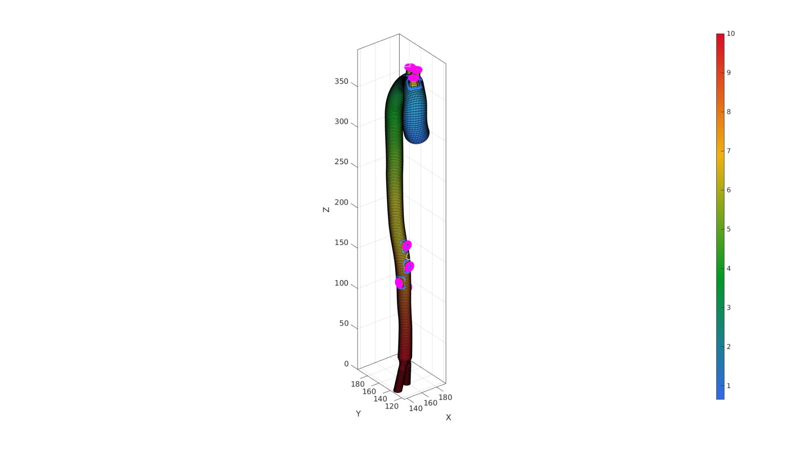 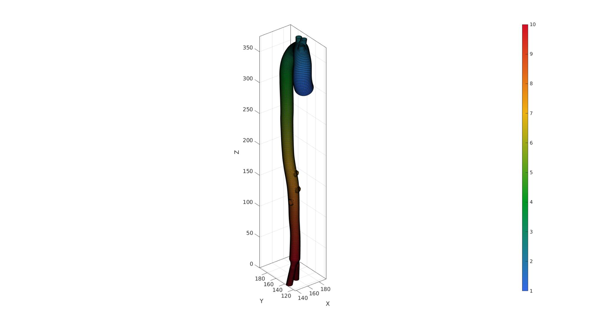 plot
cFigure(figStruct); hold on; gpatch(F_main,V_main,'kw','none',0.5); axisGeom; colormap gjet; colorbar; camlight headlight; drawnow; for q=1:1:numel(V_cut_cell) V_mean_now=mean(V_cut_cell{q},1); plotV(V_mean_now,'r.','markerSize',25); [~,indMin]=minDist(V_mean_now,VF); plotV(VF(indMin,:),'b.','markerSize',25); c=C_path_mat(indMin); C_path_mat=[C_path_mat; c*ones(size(F_branch_cell{q},1),1)]; end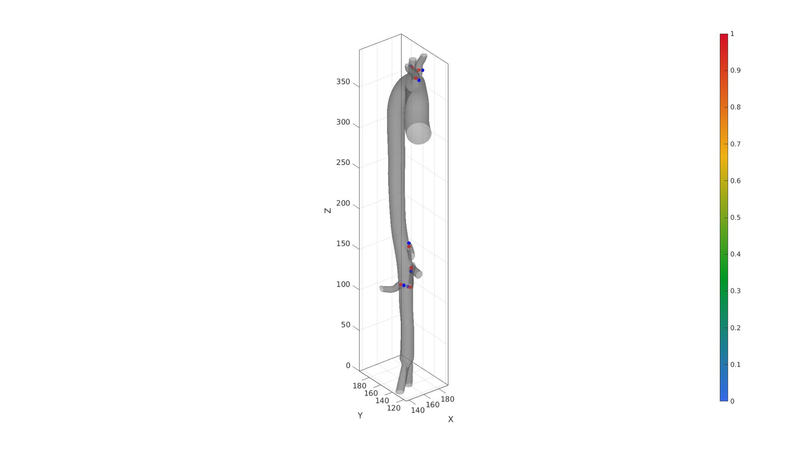
%Fix curve indices for joining sets for q=1:1:numel(indBranchBottom_cell) indBranchTop_cell{q}=indBranchTop_cell{q}+numVerticesInitial; indBranchBottom_cell{q}=indBranchBottom_cell{q}+numVerticesInitial; end %merging nodes together [F_main,V_main,~,indFix]=mergeVertices(F_main,V_main); %Fix curve indices for merging for q=1:1:numel(indBranchBottom_cell) indBranchTop_cell{q}=indFix(indBranchTop_cell{q})'; indBranchBottom_cell{q}=indFix(indBranchBottom_cell{q})'; end for q=1:1:numel(segmentCurve_cell) segmentCurve_cell{q}=indFix(segmentCurve_cell{q}); end E_rings=indFix(E_rings); % Snapping material color data to number of materials C_path_index=C_path_mat; C_path_mat=round(rescale(C_path_mat,1,numMaterials));
plot
cFigure(figStruct); hold on; gpatch(F_main,V_main,C_path,'k',1); axisGeom; colormap gjet; colorbar; camlight headlight; drawnow;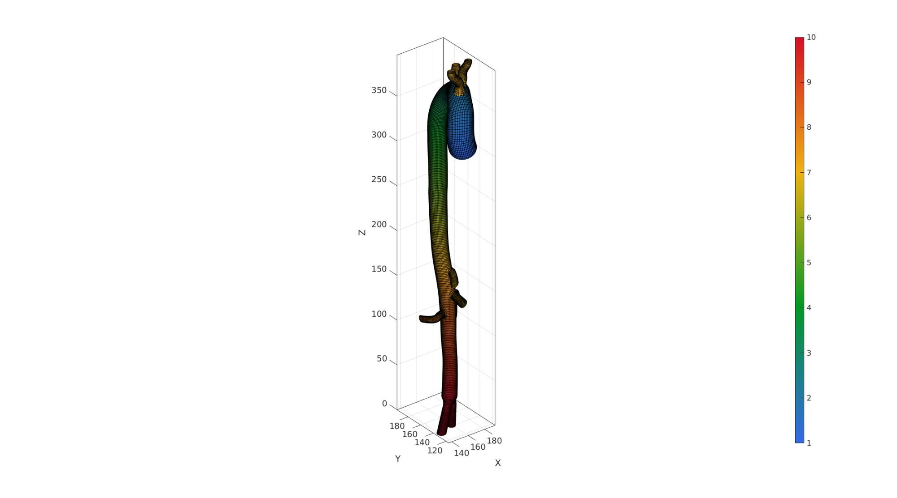
%Smoothing of Branches indTouch=[indBranchBottom_cell{:}]; numSmoothGrowSteps=3; for q=1:1:numSmoothGrowSteps logicFacesTouch=any(ismember(F_main,indTouch),2); indTouch=F_main(logicFacesTouch,:); end smoothControlParameters.n=numSmoothBranches; smoothControlParameters.Method='HC'; smoothControlParameters.RigidConstraints=unique(F_main(~logicFacesTouch,:)); [V_main]=patchSmooth(F_main,V_main,[],smoothControlParameters); % Interpolating thicknesses thicknessData=dataStruct.WallThickness; %Thickness data indexData=1:1:numel(thicknessData); %Index data for x-axis for interpolation C_thickness=interp1(indexData,thicknessData,C_path,'spline');
plot
hf=cFigure(figStruct); hold on; gtitle('Wall Thickness') gpatch(F_main,V_main,C_thickness,'k',1); axisGeom; colormap(gjet(250)); colorbar; camlight headlight; drawnow;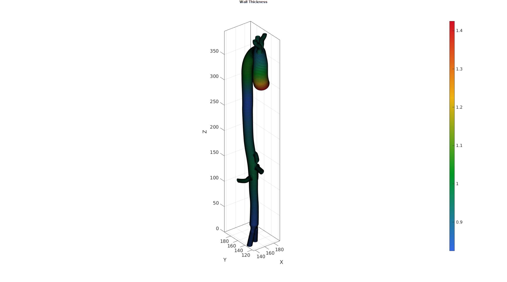
Inverting offset direction
%Converting face thickness data to vertex data
nodalThickness=faceToVertexMeasure(F_main,V_main,C_thickness);
[~,~,N]=patchNormal(F_main,V_main);
plot
cFigure(figStruct); hold on; gpatch(F_main,V_main,'kw','kw',0.5); title('Mesh Offset') quiverVec(V_main,-N.*nodalThickness,[],nodalThickness); axisGeom; colormap(gjet(250)); colorbar; camlight headlight; drawnow;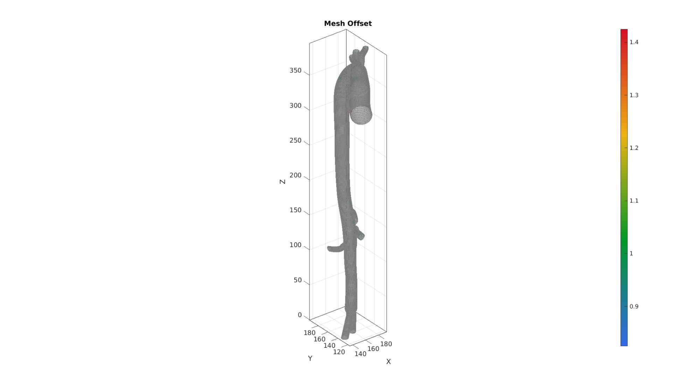
Thicken to create hexahedral elements
[ET,VT,Fp1,Fp2]=patchThick(F_main,V_main,-1,nodalThickness,numThickenSteps); CT=repmat((1:1:size(F_main,1))',numThickenSteps,1); ET=ET(:,[5:8 1:4]); FT_inner=Fp2; FT_outer=Fp1; [~,logicPositive]=hexVol(ET,VT); % logicPositive if any(logicPositive==0) error('Negative hex volume found'); end C_ET_path_mat_index=C_path_mat; C_ET_path_index=C_path_index; indicesNodesInner=unique(FT_inner(:)); % Find elements touching the branch ends indBranchTopAll=[indBranchTop_cell{:}]; %+size(V_main,1)*numThickenSteps; logicBranchEndElement=any(ismember(ET,indBranchTopAll),2);
Retrieve segment curve indices
segmentCurve_cell_outer=segmentCurve_cell; for q=1:1:numel(segmentCurve_cell) segmentCurve_cell{q}=segmentCurve_cell{q}+size(V_main,1)*numThickenSteps; end [FT,CFT]=element2patch(ET,CT);
plot
cFigure(figStruct); hold on; gpatch(FT,VT,CFT,'k',0.5); gpatch(FT_inner,VT,'g','k',1); for q=1:1:numel(segmentCurve_cell) plotV(VT(segmentCurve_cell{q},:),'g.-','LineWidth',5,'markerSize',15); end for q=1:1:numel(segmentCurve_cell) plotV(VT(segmentCurve_cell_outer{q},:),'r.-','LineWidth',5,'markerSize',15); end axisGeom; colormap(gjet(250)); colorbar; camlight headlight; drawnow;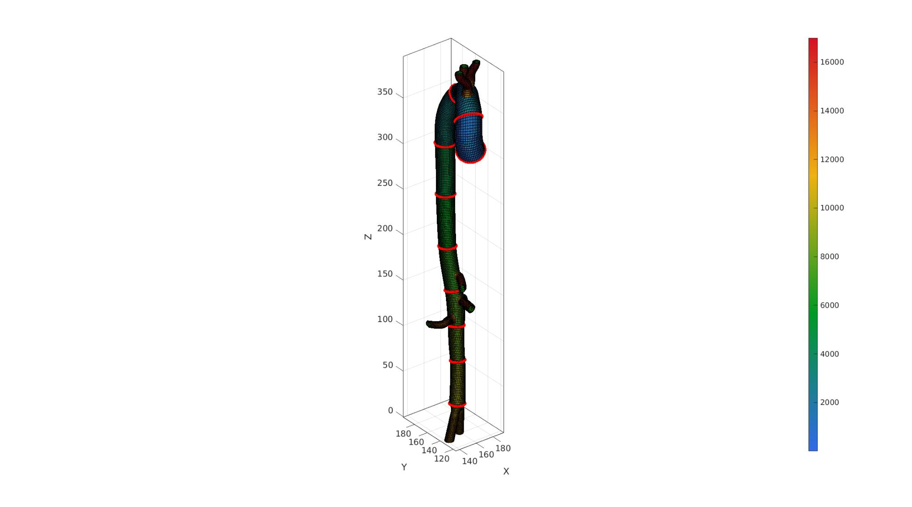
Grouping ring edges and offset so they are on the inside
%Offset indices inward E_rings=E_rings+size(V_main,1)*numThickenSteps; %Group indices to form rings optionStruct.outputType='label'; G_rings=tesgroup(E_rings,optionStruct); %Compose ring cell ringCurve_cell=cell(1,max(G_rings)); for q=1:1:max(G_rings) indList=edgeListToCurve(E_rings(G_rings==q,:)); %1=Ring number indList=indList(1:end-1); ringCurve_cell{q}=indList; end
plot
cFigure(figStruct); hold on; gpatch(FT,VT,'kw','none',0.5); plotColors=gjet(max(G_rings)); for q=1:1:max(G_rings) hp=plotV(VT(ringCurve_cell{q},:),'b.-','LineWidth',5,'markerSize',15); % hp.Color=plotColors(q,:); end axisGeom; colormap(gjet(250)); colorbar; camlight headlight; drawnow;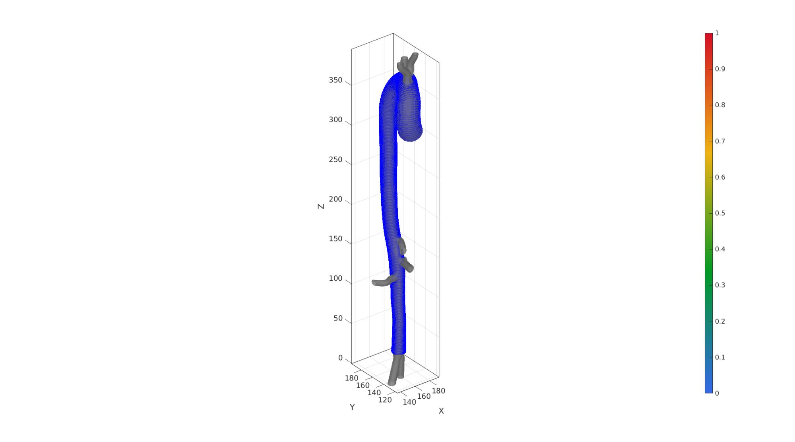
Create color data for hex elements
C_ET_path_mat_index=C_ET_path_mat_index(CT); C_ET_path_index=C_ET_path_index(CT); logicBranchEndElement=logicBranchEndElement(CT); %Colors for original element indices (and sweeping steps) %%Define Inner Surface Set logicElementsInner=any(ismember(ET,indicesNodesInner),2); indicesElementsInner=find(logicElementsInner);
plot
cFigure(figStruct); hold on; gpatch(FT_inner,VT,'gw','none',0.5); gpatch(FT_outer,VT,'rw','none',0.5); patchNormPlot(FT_inner,VT) axisGeom; colormap(gjet(250)); colorbar; camlight headlight; drawnow;
Material Properties
Assign element material parameters Derive interpolatable parameters [Vcol,Vela,Ee,xeps,mu]
indexData=1:1:numel(xeps_data); indexDataInterp=linspace(1,numel(xeps_data),numMaterials); indexData_ET=1:1:numMaterials; xeps_vector=interp1(indexData,xeps_data,indexDataInterp,'spline'); xeps_ET=interp1(indexData_ET,xeps_vector,C_ET_path_mat_index,'spline'); Ee_vector=interp1(indexData,Ee_data,indexDataInterp,'spline'); Ee_ET=interp1(indexData_ET,Ee_vector,C_ET_path_mat_index,'spline'); Vela_vector=interp1(indexData,Vela_data,indexDataInterp,'spline'); Vela_ET=interp1(indexData_ET,Vela_vector,C_ET_path_mat_index,'spline'); Vcol_vector=interp1(indexData,Vcol_data,indexDataInterp,'spline'); Vcol_ET=interp1(indexData_ET,Vcol_vector,C_ET_path_mat_index,'spline'); Vsmc_vector=interp1(indexData,Vsmc_data,indexDataInterp,'spline'); Vsmc_ET=interp1(indexData_ET,Vsmc_vector,C_ET_path_mat_index,'spline');
Define Branch Ends Set
[FT,CFT]=element2patch(ET,logicElementsInner); [~,CFT_logicBranchEndElement]=element2patch(ET,logicBranchEndElement); [~,CFT_path_mat]=element2patch(ET,C_ET_path_mat_index); [~,xeps_FT]=element2patch(ET,xeps_ET); [~,Ee_FT]=element2patch(ET,Ee_ET); [~,Vela_FT]=element2patch(ET,Vela_ET); [~,Vcol_FT]=element2patch(ET,Vcol_ET); [~,Vsmc_FT]=element2patch(ET,Vsmc_ET); indBoundary=tesBoundary(FT,VT); Fb=FT(indBoundary,:); F1=sort(ET(:,[1 2 3 4]),2); F2=sort(ET(:,[5 6 7 8]),2); FT_boundary=FT(indBoundary,:); sizVirt=size(VT,1)*ones(1,size(FT,2)); indVirt_F1=sub2indn(sizVirt,F1); indVirt_F2=sub2indn(sizVirt,F2); indVirt_FT_boundary=sub2indn(sizVirt,sort(FT_boundary,2)); indVirt_FT=sub2indn(sizVirt,sort(FT,2)); CFT_logicBranchEndElement=CFT_logicBranchEndElement & ismember(indVirt_FT,indVirt_FT_boundary); %Only keep boundary members CFT_logicBranchEndElement=CFT_logicBranchEndElement & ~ismember(indVirt_FT,indVirt_F1); %Cant be member of top CFT_logicBranchEndElement=CFT_logicBranchEndElement & ~ismember(indVirt_FT,indVirt_F2); %Cant be member of bottom %Nodes for boundary conditions indNodesFix=FT(CFT_logicBranchEndElement,:); indNodesFix=unique(indNodesFix(:));
Warning: Second input (vertices) no longer required. Update code to avoid future error.
plot full mesh
cFigure(figStruct); hold on; gpatch(FT,VT,CFT_logicBranchEndElement,'r',1); xlim([140 200]); ylim([120 200]); zlim([20 370]); axisGeom; colormap(gjet(250)); colorbar; camlight headlight; drawnow;
plot interpolated parameters
cFigure(figStruct); subplot(2,3,1);hold on; title('Indexing color'); gpatch(FT(indBoundary,:),VT,CFT_path_mat(indBoundary,:),'none',1); axisGeom; colormap(gjet(250)); colorbar; camlight headlight; subplot(2,3,2);hold on; title('xeps'); gpatch(FT(indBoundary,:),VT,xeps_FT(indBoundary,:),'none',1); axisGeom; colormap(gjet(250)); colorbar; camlight headlight; subplot(2,3,3);hold on; title('Ee'); gpatch(FT(indBoundary,:),VT,Ee_FT(indBoundary,:),'none',1); axisGeom; colormap(gjet(250)); colorbar; caxis([min(Ee_data) max(Ee_data)]); camlight headlight; subplot(2,3,4);hold on; title('Vcol'); gpatch(FT(indBoundary,:),VT,Vcol_FT(indBoundary,:),'none',1); axisGeom; colormap(gjet(250)); colorbar; camlight headlight; %axis off subplot(2,3,5);hold on; title('Vela'); gpatch(FT(indBoundary,:),VT,Vela_FT(indBoundary,:),'none',1); axisGeom; colormap(gjet(250)); colorbar; camlight headlight; %axis off drawnow; %End of Model Generation steps

Create ABAQUS structure
Setup structure to define an Abaqus inp file
%%--> Heading abaqus_spec.Heading.COMMENT{1}='Job name: AORTA'; %%--> Preprint abaqus_spec.Preprint.ATTR.echo='NO'; abaqus_spec.Preprint.ATTR.model='NO'; abaqus_spec.Preprint.ATTR.history='NO'; abaqus_spec.Preprint.ATTR.contact='NO'; %--> Part % Node nodeIds=(1:1:size(VT,1))'; abaqus_spec.Part.COMMENT='This section defines the part geometry in terms of nodes and elements'; abaqus_spec.Part.ATTR.name='Aorta'; abaqus_spec.Part.Node={nodeIds,VT}; % Element elementIds=(1:1:size(ET,1))'; abaqus_spec.Part.Element{1}.ATTR.type='C3D8'; abaqus_spec.Part.Element{1}.VAL={elementIds,ET}; % Element sets for q=1:1:numMaterials elementIdsSetNow=find(C_ET_path_mat_index==q); abaqus_spec.Part.Elset{q}.ATTR.elset=['MatSet-',num2str(q)]; abaqus_spec.Part.Elset{q}.VAL=elementIdsSetNow'; end surfaceElementSetName='elementSetInnerSurface'; abaqus_spec.Part.Elset{numMaterials+1}.ATTR.elset=surfaceElementSetName; abaqus_spec.Part.Elset{numMaterials+1}.ATTR.internal=''; %Remains hidden uppon import abaqus_spec.Part.Elset{numMaterials+1}.VAL=indicesElementsInner(:)'; % Surfaces sidePick=1; abaqus_spec.Part.Surface{1}.ATTR.type='ELEMENT'; abaqus_spec.Part.Surface{1}.ATTR.name=[surfaceElementSetName,'_side',num2str(sidePick)]; abaqus_spec.Part.Surface{1}.VAL={surfaceElementSetName,['S',num2str(sidePick)]}; % Sections for q=1:1:numMaterials elementIdsSetNow=find(C_ET_path_mat_index==q); abaqus_spec.Part.Solid_section{q}.ATTR.elset=['MatSet-',num2str(q)]; abaqus_spec.Part.Solid_section{q}.ATTR.material=['Mat_',num2str(q)]; end %--> Assembly abaqus_spec.Assembly.ATTR.name='Assembly-1'; abaqus_spec.Assembly.Instance.ATTR.name='Aorta-assembly'; abaqus_spec.Assembly.Instance.ATTR.part='Aorta'; abaqus_spec.Assembly.Nset{1}.ATTR.nset='NSet_Inner'; abaqus_spec.Assembly.Nset{1}.ATTR.instance=abaqus_spec.Assembly.Instance.ATTR.name; abaqus_spec.Assembly.Nset{1}.VAL=indicesNodesInner; %Add segment curve node sets for q=1:1:numel(segmentCurve_cell) indNow=numel(abaqus_spec.Assembly.Nset)+1; abaqus_spec.Assembly.Nset{indNow}.ATTR.nset=['Segment',num2str(q)]; abaqus_spec.Assembly.Nset{indNow}.ATTR.instance=abaqus_spec.Assembly.Instance.ATTR.name; abaqus_spec.Assembly.Nset{indNow}.VAL=segmentCurve_cell{q}; end %Add ring curve node sets for q=1:1:numel(ringCurve_cell) indNow=numel(abaqus_spec.Assembly.Nset)+1; abaqus_spec.Assembly.Nset{indNow}.ATTR.nset=['Ring',num2str(q)]; abaqus_spec.Assembly.Nset{indNow}.ATTR.instance=abaqus_spec.Assembly.Instance.ATTR.name; abaqus_spec.Assembly.Nset{indNow}.VAL=ringCurve_cell{q}; end %Add fix node set % indNow=numel(abaqus_spec.Assembly.Nset)+1; % setNameFix=['Set-',num2str(indNow)]; % abaqus_spec.Assembly.Nset{indNow}.ATTR.nset=setNameFix; % abaqus_spec.Assembly.Nset{indNow}.ATTR.instance=abaqus_spec.Assembly.Instance.ATTR.name; % abaqus_spec.Assembly.Nset{indNow}.VAL=indNodesFix'; %%--> Material for q=1:1:numMaterials abaqus_spec.Material{q}.ATTR.name=['mat_',num2str(q)]; abaqus_spec.Material{q}.Depvar.VAL=13; abaqus_spec.Material{q}.User_Material.ATTR.constants=17; %Define material parameters mu_now=mu_data; k_now=mu_now*kfactor; D_now=2/k_now; k1_now=k1_data; k2_now=k2_data; kappa_now=kappa_data; theta1_now=theta1_data; theta2_now=theta2_data; sigact_now=sigact_data; ke_now=ke_data; Ee_now=Ee_vector(q); thetaE1_now=thetaE1_data; thetaE2_now=thetaE2_data; iswitch_now=iswitch; xeps_now=xeps_vector(q); Vcol_now=Vcol_vector(q); Vela_now=Vela_vector(q); Vsmc_now=Vsmc_vector(q); t=vec2strIntDouble([mu_now/2 D_now k1_now k2_now kappa_now theta1_now theta2_now sigact_now ke_now Ee_now thetaE1_now thetaE2_now iswitch_now xeps_now Vcol_now Vela_now Vsmc_now],'%6.7e'); t=strwrap(t,8,', '); %Wrap to max width of 8 entries %abaqus_spec.User_Material{q}.VAL=t; abaqus_spec.Material{q}.User_Material.VAL=t; end %%--> Step abaqus_spec.Step.ATTR.name='Step-1'; abaqus_spec.Step.ATTR.nlgeom='YES'; abaqus_spec.Step.Static=[0.01 1 1e-6 0.01]; % Boundary % setNameFix=abaqus_spec.Assembly.Nset{indNow}.ATTR.nset; % abaqus_spec.Step.Boundary{1}.VAL={setNameFix,[1,1]}; % abaqus_spec.Step.Boundary{2}.VAL={setNameFix,[2,2]}; % abaqus_spec.Step.Boundary{3}.VAL={setNameFix,[3,3]}; %Output % abaqus_spec.Step.Restart.ATTR.write=''; % abaqus_spec.Step.Restart.ATTR.frequency=0; % % abaqus_spec.Step.Output{1}.ATTR.field=''; % abaqus_spec.Step.Output{1}.ATTR.variable='PRESELECT'; % abaqus_spec.Step.Output{2}.ATTR.history=''; % abaqus_spec.Step.Output{2}.ATTR.variable='PRESELECT'; % abaqus_spec.Step.Node_print.ATTR.nset='all'; % abaqus_spec.Step.Node_print.ATTR.frequency = 1; % abaqus_spec.Step.Node_print.VAL='COORD'; % abaqus_spec.Step.El_print{1}.VAL='S'; % abaqus_spec.Step.El_print{2}.VAL='E'; % Creating the INP file % You can use |abaqusStruct2inp| to write the structure data to a file.
if saveOn==1 % Export INP file abaqusStruct2inp(abaqus_spec,abaqusInpFileName); saveStruct.ET=ET; saveStruct.FT=FT; saveStruct.VT=VT; saveStruct.Fb=Fb; saveStruct.segmentCurve_cell=segmentCurve_cell; saveStruct.abaqus_spec=abaqus_spec; save(matfileSaveName,'-struct','saveStruct'); disp('inp file write complete') end
FUNCTIONS %%%%%%%%%%%%%%%%%%%%%%%%%%%%%%%%%%%%%%%%%%%%%%%%%%%%%%%%%%%%%%
function [Fs,Vs,Cs,indEnd,logicRemoveFaces,segmentCurve_cell,E_rings]=circleCutExtrude(F,V,C,V_cent,V_cut,pointSpacing,plotOn,smoothControlParameters,segmentCurve_cell,E_rings)
Conver to triangles
Ft=[F(:,[1 2 3]);F(:,[3 4 1])];
Resample center line
np=round(max(pathLength(V_cent))/pointSpacing);
V_cent = evenlySampleCurve(V_cent,np,'spline',0);
Get mean of cut curve, project to surface
V_cut_mean=mean(V_cut,1); rMax=max(sqrt(sum((V_cut-V_cut_mean(ones(size(V_cut,1),1),:)).^2,2))); [~,indMin]=minDist(V_cut_mean,V_cent); v=V_cent(indMin,:)-V_cut_mean; optStruct.eps = 1e-6; optStruct.triangle = 'one sided'; optStruct.ray = 'ray'; optStruct.border = 'normal'; [V_intersect,L_intersect,~] = triangleRayIntersection(V_cut_mean(ones(size(Ft,1),1),:),v(ones(size(Ft,1),1),:),V,Ft,optStruct); V_intersect=V_intersect(L_intersect,:); D=minDist(V,V_intersect); logicRemoveVertices=D<=rMax; logicRemoveFaces=any(logicRemoveVertices(F),2); Eb_cut=patchBoundary(F(logicRemoveFaces,:),V); indCurveCut=edgeListToCurve(Eb_cut); indCurveCut=indCurveCut(1:end-1); indCurveCut=indCurveCut(:); logicFlip=~any((Eb_cut(:,1)==indCurveCut(1))&(Eb_cut(:,2)==indCurveCut(2))); if logicFlip indCurveCut=flipud(indCurveCut); end V_curve_cut=V(indCurveCut,:); %Resample so they have the same amount of points np=size(V_curve_cut,1); V_cut = evenlySampleCurve(V_cut,np,'spline',1); %Get appropriate start point [~,indMin]=minDist(V_cut(1,:),V_curve_cut); if indMin>1 V_curve_cut=[V_curve_cut(indMin:end,:); V_curve_cut(1:indMin-1,:)]; end V_curve_cut_mean=mean(V_curve_cut,1); V_cut_mean=mean(V_cut,1); % Check order again nq=round(0.25*np); a1=dot(V_cut(nq,:)-V_cut_mean,V_curve_cut(nq,:)-V_curve_cut_mean); V_cut_test=flipud(V_cut); a2=dot(V_cut_test(nq,:)-V_cut_mean,V_curve_cut(nq,:)-V_curve_cut_mean); if a2>a1 V_cut=V_cut_test; end %Get appropriate start point [~,indMin]=minDist(V_cut(1,:),V_curve_cut); if indMin>1 V_curve_cut=[V_curve_cut(indMin:end,:); V_curve_cut(1:indMin-1,:)]; end %Minimize twist SSQD=zeros(np,1); for q=1:1:np if q>1 indSort=[q:np 1:q-1]; else indSort=1:np; end V_curve_cut_test=V_curve_cut(indSort,:); SSQD(q)=sum(sqrt(sum((V_curve_cut_test-V_cut).^2,2)).^2); end %Get sort order [~,q]=min(SSQD); if q>1 indSort=[q:np 1:q-1]; V_curve_cut=V_curve_cut(indSort,:); end
Warning: This function is depricated, it is recommended to update your code to use triSurfRayTrace instead Warning: Second input (vertices) no longer required. Update code to avoid future error.
Warning: This function is depricated, it is recommended to update your code to use triSurfRayTrace instead Warning: Second input (vertices) no longer required. Update code to avoid future error.
Warning: This function is depricated, it is recommended to update your code to use triSurfRayTrace instead Warning: Second input (vertices) no longer required. Update code to avoid future error.
Warning: This function is depricated, it is recommended to update your code to use triSurfRayTrace instead Warning: Second input (vertices) no longer required. Update code to avoid future error.
Warning: This function is depricated, it is recommended to update your code to use triSurfRayTrace instead Warning: Second input (vertices) no longer required. Update code to avoid future error.
Warning: This function is depricated, it is recommended to update your code to use triSurfRayTrace instead Warning: Second input (vertices) no longer required. Update code to avoid future error.
Warning: This function is depricated, it is recommended to update your code to use triSurfRayTrace instead Warning: Second input (vertices) no longer required. Update code to avoid future error.
F=F(~logicRemoveFaces,:); C=C(~logicRemoveFaces);
Loft
cPar.closeLoopOpt=1;
cPar.patchType='quad';
[F_merge,V_merge,~,indEnd]=polyLoftLinear(V_curve_cut,V_cut,cPar);
C_merge=max(C(:))+ones(size(F_merge,1),1);
% if plotOn==1 % cFigure(figStruct); hold on; % gpatch(F,V,C,'k',0.5); % gpatch(F_merge,V_merge,'g','k',1); % plotV(V_cent,'g.-','LineWidth',3,'markerSize',25); % plotV(V_cut,'r.-','LineWidth',3,'markerSize',25); % plotV(V_cut_mean,'r.','markerSize',50); % plotV(V_curve_cut,'b.-','LineWidth',3); % plotV(V_intersect,'b.','markerSize',50); % quiverVec(V_cut_mean,v,[],'r'); % axisGeom; % colormap gjet; % camlight headlight; % drawnow; % end
[Fs,Vs,Cs]=joinElementSets({F,F_merge},{V,V_merge},{C,C_merge});
indEnd=indEnd+size(V,1);
Constrained smoothing
nGrowthSteps=2; logicSmooth=any(ismember(Fs,indCurveCut),2); for q=1:1:nGrowthSteps-1 indTouch=unique(Fs(logicSmooth,:)); logicSmooth=any(ismember(Fs,indTouch),2); end logicSmooth=logicSmooth | Cs==max(Cs(:)); [Fs,Vs,~,indFix]=mergeVertices(Fs,Vs); %Merging points indEnd=indFix(indEnd); for q=1:1:numel(segmentCurve_cell) indSegment=segmentCurve_cell{q}; indSegment=indSegment(indSegment>0); segmentCurve_cell{q}=indFix(indSegment); end E_rings=indFix(E_rings); [Fs,Vs,indFix]=patchCleanUnused(Fs,Vs); %removing unused at hole indEnd=indFix(indEnd); E_rings=indFix(E_rings); E_rings=E_rings(all(E_rings>0,2),:); for q=1:1:numel(segmentCurve_cell) indSegment=segmentCurve_cell{q}; indSegment=indSegment(indSegment>0); segmentCurve_cell{q}=indFix(indSegment); end indRigid=unique(Fs(~logicSmooth,:)); indRigid=unique([indRigid(:);indEnd(:)]); Eb=patchBoundary(Fs,Vs); smoothControlParameters.RigidConstraints=unique([indRigid(:);Eb(:)]); [Vs]=patchSmooth(Fs,Vs,[],smoothControlParameters);
Warning: Second input (vertices) no longer required. Update code to avoid future error.
Warning: Second input (vertices) no longer required. Update code to avoid future error.
Warning: Second input (vertices) no longer required. Update code to avoid future error.
Warning: Second input (vertices) no longer required. Update code to avoid future error.
Warning: Second input (vertices) no longer required. Update code to avoid future error.
Warning: Second input (vertices) no longer required. Update code to avoid future error.
Warning: Second input (vertices) no longer required. Update code to avoid future error.
if plotOn==1 cFigure(figStruct); hold on; gpatch(Fs,Vs,logicSmooth,'k',1); patchNormPlot(Fs,Vs); plotV(Vs(indRigid,:),'b.','markerSize',25); axisGeom; colormap gjet; camlight headlight; drawnow; end
end
function V=resampleCurve(V,pointSpacing,closeLoopOpt) np=ceil(max(pathLength(V))/pointSpacing); V = evenlySampleCurve(V,np,'spline',closeLoopOpt); end
function [Vn]=curveOffset(V,wallThickness) p1=mean(V,1); %Curve center vf=-vecnormalize(V-[V(2:end,:);V(1,:)]); %Allong curve path vectors vb=vecnormalize(V-[V(end,:);V(1:end-1,:)]); %Allong curve path vectors v=(vf+vb)/2; r=vecnormalize(V-p1); %Position vector wrt mean v1=vecnormalize(cross(v,r)); %perimeter quasi Z-vectors n=vecnormalize(cross(v1(ones(size(v,1),1),:),v)); %Outward normal vectors Vn=(V+n*wallThickness); %Offset to create new curve % cFigure; % plotV(V,'k.-'); % quiverVec(V,vf,3,'r'); % quiverVec(V,vb,3,'b'); % quiverVec(V,v,3,'g'); % axisGeom % drawnow; end
GIBBON footer text
License: https://github.com/gibbonCode/GIBBON/blob/master/LICENSE
GIBBON: The Geometry and Image-based Bioengineering add-On. A toolbox for image segmentation, image-based modeling, meshing, and finite element analysis.
Copyright (C) 2006-2022 Kevin Mattheus Moerman and the GIBBON contributors
This program is free software: you can redistribute it and/or modify it under the terms of the GNU General Public License as published by the Free Software Foundation, either version 3 of the License, or (at your option) any later version.
This program is distributed in the hope that it will be useful, but WITHOUT ANY WARRANTY; without even the implied warranty of MERCHANTABILITY or FITNESS FOR A PARTICULAR PURPOSE. See the GNU General Public License for more details.
You should have received a copy of the GNU General Public License along with this program. If not, see http://www.gnu.org/licenses/.